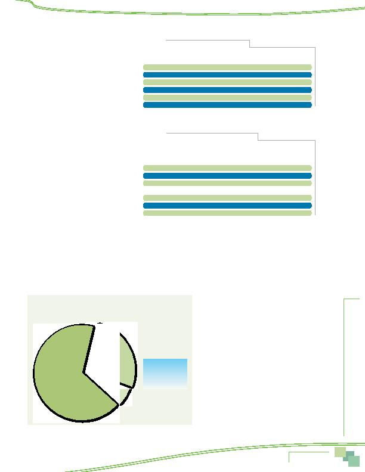

MWCOG-Comm
uter Conn
ecti
on
s-- 2010 State o
f th
e Comm
ute Report
6 3
Commute Distance By Mode
Survey respondents' travel distance varied by
the type of transportation they used to commute
(Table 35). Commuter rail riders traveled the
farthest, 29.3 miles one-way. Carpoolers/vanpool-
ers also traveled farther than the mile regional
average. Commuter rail, bus, and train riders
spent the longest time commuting, at least 48
minutes one-way.
Commute Distance By Home
and Work Location
Survey respondents' travel distance also
varied by where they lived and where they worked
(Table 36). Respondents who lived in the Inner
Core traveled the shortest distance to work, an
average of 8.2 miles one-way. Respondents who
lived in the Middle Ring commuted nearly twice
as far, 15.7 miles. And respondents who lived in
the Outer Ring traveled 23.7 miles one-way.
Commute distances by work area were less
varied. Respondents who worked in the Inner
Core traveled an average of 15.6 miles. Middle
Ring workers traveled slightly farther, 16.1 miles.
Respondents who worked in the Outer Ring trav-
eled the farthest, 18.9 miles one way.
Inner Core area residents had the shortest
travel times; they traveled an average of 30 minutes one-way. But, while the Inner Core respondents traveled fewer minutes to work
than did other respondents, they did not have proportionately shorter travel times; Middle Ring residents traveled only seven minutes
longer than did Inner Core residents and Outer Ring residents traveled 12 minutes longer. This is likely due to the higher transit and
bike/walk use among Inner Core respondents; transit trips, while short in distance, tend to be longer in time.
By contrast with the home area results, respondents who worked in the Inner Core had the longest commute times, an average
of 41 minutes one-way. Middle Ring workers and Outer Ring workers commuted 34 minutes and 29 minutes, respectively. The higher
travel times for Inner Core workers likely are due to their higher use of transit for commuting and the higher congestion they would
encounter in their commute.
NON-STANDARD WORK SCHEDULES
Non-Standard Work Schedules Used
Figure 59 shows the distribution of work
schedules for respondents who said they worked
full-time schedules and commuted to an outside
work location.
Two-thirds (67%) of these respondents said they
worked a "standard" schedule, defined for full-time
workers as five or more days per week. Of those who
worked a "non-standard" schedule, the most com-
mon schedule was flex-time or flexible work hours,
used by 27% of respondents. About six percent of
respondents worked compressed work schedules;
9/80 schedules were most typical.
Table 35
Commute Distance by Primary Mode
Primary Average Distance (mi.) Average Time (min.)
Commute Mode
(n=__)
Average
(n=__)
Average
Commuter rail
51
29.3 mi.
61
68 min.
Carpool/Vanpool
405
19.0 mi.
421
41 min.
Bus
258
16.5 mi.
320
51 min.
Drive alone
4,026
16.3 mi.
4,099
33 min.
Metrorail
524
15.8 mi.
666
48 min.
Bike/walk
151
3.4 mi.
163
20 min.
Table 36
Commute Distance by Home and Work Area
Primary Average Distance (mi.) Average Time (min.)
Commute Mode
(n=__)
Average
(n=__)
Average
Home Area
Inner Core
1,423
8.2 mi.
1,575
30 min.
Middle Ring
1,470
15.7 mi.
1,589
37 min.
Outer Ring
2,634
23.7 mi.
2,676
42 min.
Work Area
Inner Core
2,392
15.6 mi.
2,603
41 min.
Middle Ring
1,818
16.1 mi.
1,869
34 min.
Outer Ring
1,297
18.9 mi.
1,343
29 min.
Figure 59
Non-Standard Schedule Types Used
Standard
67%
Flextime
27%
CWS
6%
9/80 CWS 4.3%
4/40 CWS 1.1%
3/36 CWS 0.6%
Commute Patterns